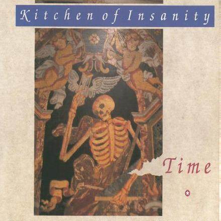
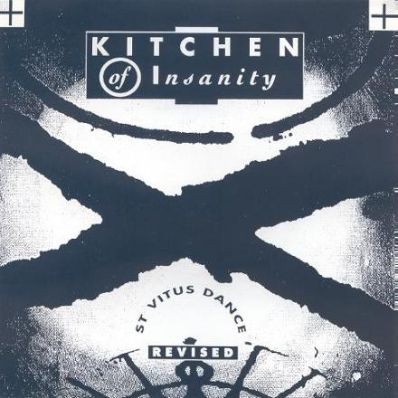
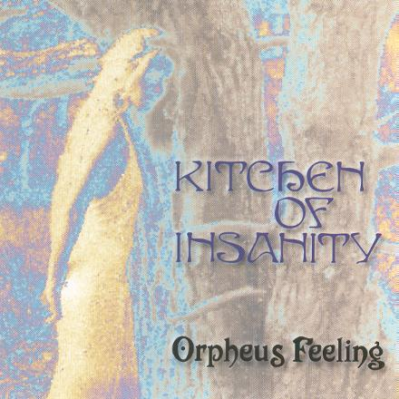

I'm In Trouble
Voyage Au Bout De La Nuit
Days To Be Loved
We Go On
Ghosts Of Feeling
This City
Memories
Into Desire
Time
Dreamaway Sunday
lp/cd
Scorpio Records SR 006
released Sept. 1990

Time
Come Along
All The Things
I'm In Trouble (remix)
Voyage Au Bout De La Nuit (remix)
maxi cd
Scorpio Records SR 009
released 1991

St. Vitus Dance Revised (live)
7" vinyl
Manifesto Records MR 002
released Dec. 1992

Bare Existence
Sitting In The Shades Of Summer
Passing Through
Lost In My Dreams
Whatever...
Drink
Never Growing Inside
Orpheus Feeling
Sunny Day
St. Vitus Dance Revised